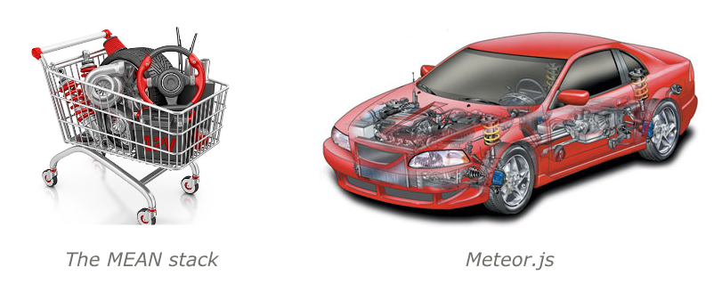

All in One.
So what is Meteor?
Meteor is a complete open source platform for building web and mobile apps in pure JavaScript.
Meteor is 2 things:
- A library of packages: pre-written, self-contained modules that you might need in your app.
- A command-line tool called Meteor.
The Meteor Platform
- Blaze - Reactive UI Library.
- Tracker - Reactive programming made easy.
- DDP - Websocket-based data protocol.
- Livequery - Live database connectors.
- Isobuild - Unified build system for browser, server, and mobile.
- Minimongo - In-memory JS reimplementations of MongoDB.
The Meteor Tool
- Version Solver for managing dependency versions.
- Download any necessary packages.
- Build your app with Isobuild.
- Run it locally.
- Meteor deploy hosting service.
- File watching and live code reloads.


Principles of Meteor
- Data on the Wire.
- One Language.
- Database Everywhere.
- Latency Compensation.
- Full Stack Reactivity.
- Embrace the Ecosystem.
- Simplicity == Productivity.
Browser
- Tracker - The backbone of the reactive front-end.
- Spacebars - A derivation of Handlebars.
- Blaze - A reactive library built to marry Tracker & Spacebars up to create live updating user interfaces.
- Minimongo - A client side mongo library that synchronizes data over DDP and allows the client to reactively consume mongo data.
- Session - A library to handle reactive UI state variables.
How Blaze Works

Latency Compensation - Optimistic UI

Reactivity
You can write your code in a simple imperative style, and the result will be automatically recalculated whenever data changes that your code depends on.
Meteor's Reactivity
- Reactive Sources (Session Variables, Cursor, Subscription’s ready() Method, ReactiveVar - custom reactive variables)
- Reactive Computations (Template Helpers, Routing, Autorun - custom reactive computations)
Communication layer
- DDP (Distributed Data Protocol) - A protocol for sending data over websockets. Dubbed 'REST for websockets'.
- EJSON - An extension of JSON to support serializing more data types like Dates and Binary.
DDP
- Remote procedure calls by the client to the server.
- The client subscribing to a set of documents, and the server keeping the client informed about the contents of those documents as they change over time.
- DDP messages are JSON objects, with some fields specified to be EJSON.
Server
- Node.js - A javascript server.
- Connect - A library to output http responses from an app.
- Database Driver (Mongo) - A simple drive to interface with MongoDB data.
- Livequery - A library built to query and stream out Mongo data in a reactive way.
- Fibers/Futures - A wrapper library for Node.js, making it synchronous in an effort to reduce 'callback spaghetti'.
MongoDB
The Meteor team chose MongoDB as its datastore for its performance, scalability, and rich features for JSON.
Minimongo
- Instead of sending HTML code to the client, a Meteor app will send the actual, raw data and let the client deal with it (data on the wire).
- Access that data instantaneously without having to wait for a round-trip to the server.

Robomongo - Cross-platform MongoDB management tool

Meteor Isobuild
- A mobile app in iOS .ipa format for the Apple App Store, containing native iOS code.
- A mobile app in Android .apk format for the Google Play store, containing native Android code
- For a browser-based version of the app, a HTML5 resource bundle that can run in a browser and that targets HTML5 APIs
Default file loading
- HTML templates are compiled and sent to the client.
- CSS files are sent to the client. In production mode they are automatically concatenated and minified.
- JavaScript is loaded on the client and the server.
You can use Meteor.isClient and Meteor.isServer to control where certain blocks of code run.
if (Meteor.isClient) {
console.log("Printed in browsers and mobile apps");
}
if (Meteor.isCordova) {
console.log("Printed only in mobile cordova apps");
}
if (Meteor.isServer) {
console.log("Printed on the server");
}
Advantages of Meteor
- One-step installation for configuration and setup
- Good for beginners
- Fast prototyping.
- Isomorphic API
- Integrated frontend and backend
- Bidirectional persistent communication (like socket.io)
- Reactivity
- MongoDB + Minimongo
- Latency compensation
- Oplog tailing for MongoDB (less server resources)
- Standard front-end router (familiar API like Express.js’s routing API)
- Lightweight front-end framework, Blaze.js
- Hot code load and hot code push
- Core packages to handle minification, preprocessing, concatenation, OAuth and custom user authentication, emailing, and coffeescripting
- Meteor tool provides many of the functionalities provided by tools such as grunt, NPM, Yeoman.
- Synchronous style coding, courtesy of the Fibers
- Support for mobile apps through Cordova Phonegap integration
- Proactive approach to security
- Official testing framework, Velocity. With Velocity, you can use your favorite testing frameworks like Jasmine or Mocha, and run acceptance tests with Selenium.
- Free server sandbox to deploy and test your apps.
Known Meteor Limitations
- It supports only one database: MongoDB.
- Its frontend framework does not have reusable UI components.
- It does not work well with SEO, even with its Spiderable hack.
- Many Atmospherejs packages don’t have the most vital information.
- Its front-end framework, Blaze.js, is neither as feature-rich and robust as Ember.js nor as expansive and extensible as Angular.js.
- Meteor isn’t great for anything that’s mainly static content, like blogs or simple static sites.
- As a general rule, Meteor is great for apps, but not for sites.
- Meteor doesn’t do server-side content generation yet, meaning that your app won’t work without JavaScript enabled.
Meteor Packages @ Atmosphere
| Date | Packages |
|---|---|
| 05.23 | 5424 |
| 06.04 | 5639 |
| 06.08 | 5688 |
| 06.15 | 5833 |
| 06.24 | 6016 |
| 06.30 | 6128 |
The MEAN Stack
- Node.js
- Express
- Grunt or Gulp
- Mongoose
- A pub/sub driver
- Websocket
- Angular
- Karma
- account/oAuth libraries
Code over configuration:
Angular Meteor
Meteor can be used as a backend platform for any reactive frontend technology.
Meteor Developer Subscription
- Technical support
- Proactive alerts
- Guaranteed response
- Architectural review
MeteorPad
MeteorPad is a Meteor code playground, similar to JSFiddle or CodePen. You can edit and run Meteor code inside your browser, then save, fork, or share pads with others.